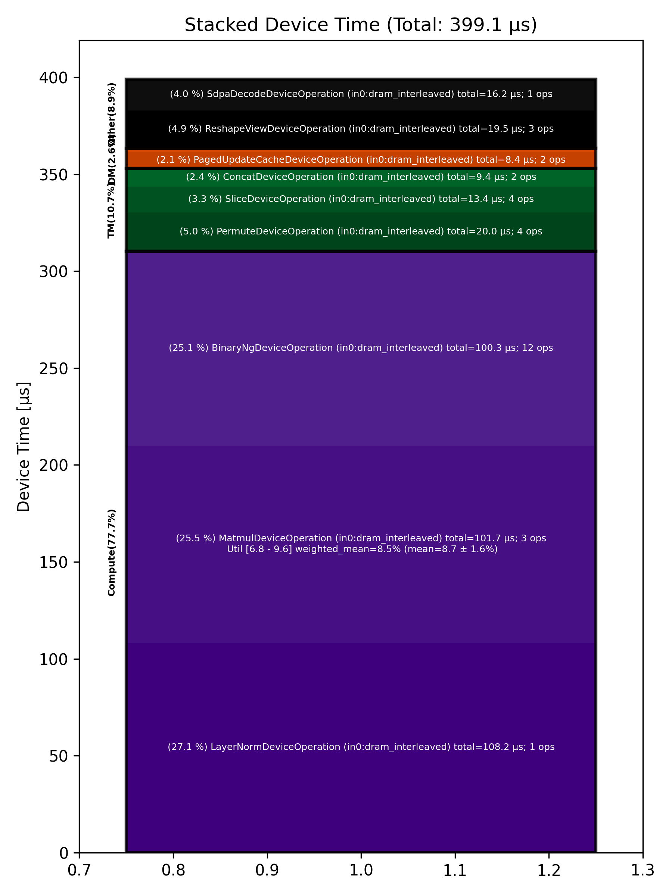

🚀 Performance Report 🚀 ======================== ID Total % Bound OP Code Device Device Time Op-to-Op Gap Cores DRAM DRAM % FLOPs FLOPs % Math Fidelity ------------------------------------------------------------------------------------------------------------------------------------------------------------------------ 29 1.4 % LayerNormDeviceOperation 19 108 μs 1 BF16, BF16 => BF16 47 3.2 % SLOW MatmulDeviceOperation 32 x 2880 x 512 26 42 μs 199 μs 16 40 GB/s 14.0 % 2.2 TFLOPs 6.8 % HiFi2 BF16 x BFP8 => BF16 75 1.3 % ReshapeViewDeviceOperation 29 13 μs 87 μs 72 BF16 => BF16 120 2.2 % SliceDeviceOperation 13 5 μs 160 μs 72 BF16 => BF16 146 3.8 % BinaryNgDeviceOperation 20 16 μs 268 μs 72 BF16, BF16 => BF16 170 3.2 % SliceDeviceOperation 28 5 μs 232 μs 72 BF16 => BF16 213 3.9 % BinaryNgDeviceOperation 23 15 μs 277 μs 72 BF16, BF16 => BF16 257 3.5 % BinaryNgDeviceOperation 8 7 μs 252 μs 72 BF16, BF16 => BF16 275 3.7 % BinaryNgDeviceOperation 21 16 μs 257 μs 72 BF16, BF16 => BF16 298 3.5 % BinaryNgDeviceOperation 28 15 μs 244 μs 72 BF16, BF16 => BF16 345 3.4 % BinaryNgDeviceOperation 12 7 μs 249 μs 72 BF16, BF16 => BF16 356 3.8 % ConcatDeviceOperation 26 7 μs 277 μs 72 BF16, BF16 => BF16 400 7.0 % SLOW MatmulDeviceOperation 32 x 2880 x 64 2 30 μs 495 μs 2 12 GB/s 4.3 % 0.4 TFLOPs 9.6 % HiFi2 BF16 x BFP8 => BF16 446 1.4 % ReshapeViewDeviceOperation 11 4 μs 97 μs 32 BF16 => BF16 458 3.7 % SliceDeviceOperation 28 2 μs 278 μs 16 BF16 => BF16 509 3.4 % PermuteDeviceOperation 19 4 μs 252 μs 16 BF16 => BF16 542 1.5 % BinaryNgDeviceOperation 11 5 μs 105 μs 72 BF16, BF16 => BF16 577 2.1 % SliceDeviceOperation 8 2 μs 152 μs 16 BF16 => BF16 600 3.3 % PermuteDeviceOperation 13 4 μs 244 μs 16 BF16 => BF16 612 1.3 % BinaryNgDeviceOperation 26 5 μs 95 μs 72 BF16, BF16 => BF16 662 2.4 % BinaryNgDeviceOperation 15 3 μs 174 μs 72 BF16, BF16 => BF16 676 3.5 % BinaryNgDeviceOperation 26 5 μs 256 μs 72 BF16, BF16 => BF16 737 3.5 % BinaryNgDeviceOperation 8 5 μs 257 μs 72 BF16, BF16 => BF16 742 3.6 % BinaryNgDeviceOperation 3 3 μs 269 μs 72 BF16, BF16 => BF16 775 3.5 % ConcatDeviceOperation 2 2 μs 260 μs 32 BF16, BF16 => BF16 808 3.6 % InterleavedToShardedDeviceOperation 1 1 μs 266 μs 16 BF16 => BF16 846 3.1 % PagedUpdateCacheDeviceOperation 7 4 μs 224 μs 16 BF16, BF16 => BF16 893 4.4 % SLOW MatmulDeviceOperation 32 x 2880 x 64 20 30 μs 301 μs 2 12 GB/s 4.3 % 0.4 TFLOPs 9.6 % HiFi2 BF16 x BFP8 => BF16 926 1.2 % ReshapeViewDeviceOperation 11 3 μs 89 μs 32 BF16 => BF16 950 2.6 % PermuteDeviceOperation 15 4 μs 189 μs 32 BF16 => BF16 977 1.4 % InterleavedToShardedDeviceOperation 4 1 μs 104 μs 16 BF16 => BF16 1002 1.8 % PagedUpdateCacheDeviceOperation 28 4 μs 132 μs 16 BF16, BF16 => BF16 1029 1.4 % PermuteDeviceOperation 27 8 μs 98 μs 72 BF16 => BF16 1061 3.3 % SdpaDecodeDeviceOperation 27 16 μs 230 μs 72 BF16, BF16 => BF16 ------------------------------------------------------------------------------------------------------------------------------------------------------------------------ 100.0 % 34 device ops, 0 host ops, 0 signposts 399 μs 7,068 μs 📊 Stacked report 📊 ==================== Total % Op Code Device Time Sum Op Count Op Category Min FLOPs Max FLOPs Mean FLOPs Std FLOPs Weighted Mean FLOPs ----------------------------------------------------------------------------------------------------------------------------------------------------------------------------- 27.11 % LayerNormDeviceOperation (in0:dram_interleaved) 108.22 μs 1 Compute 25.49 % MatmulDeviceOperation (in0:dram_interleaved) 101.75 μs 3 Compute 6.83 % 9.61 % 8.68 % 1.60 % 8.46 % 25.13 % BinaryNgDeviceOperation (in0:dram_interleaved) 100.29 μs 12 Compute 5.02 % PermuteDeviceOperation (in0:dram_interleaved) 20.02 μs 4 TM 4.88 % ReshapeViewDeviceOperation (in0:dram_interleaved) 19.46 μs 3 Other 4.05 % SdpaDecodeDeviceOperation (in0:dram_interleaved) 16.16 μs 1 Other 3.35 % SliceDeviceOperation (in0:dram_interleaved) 13.35 μs 4 TM 2.36 % ConcatDeviceOperation (in0:dram_interleaved) 9.40 μs 2 TM 2.10 % PagedUpdateCacheDeviceOperation (in0:dram_interleaved) 8.36 μs 2 DM 0.53 % InterleavedToShardedDeviceOperation (in0:dram_interleaved) 2.11 μs 2 DM -----------------------------------------------------------------------------------------------------------------------------------------------------------------------------
